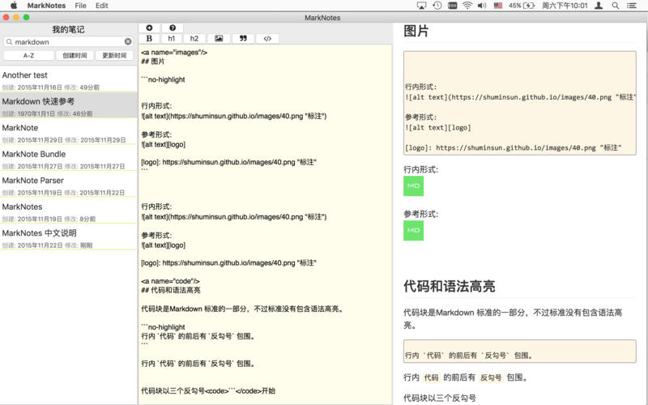
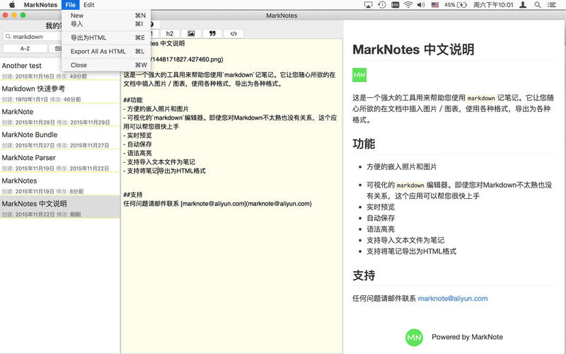
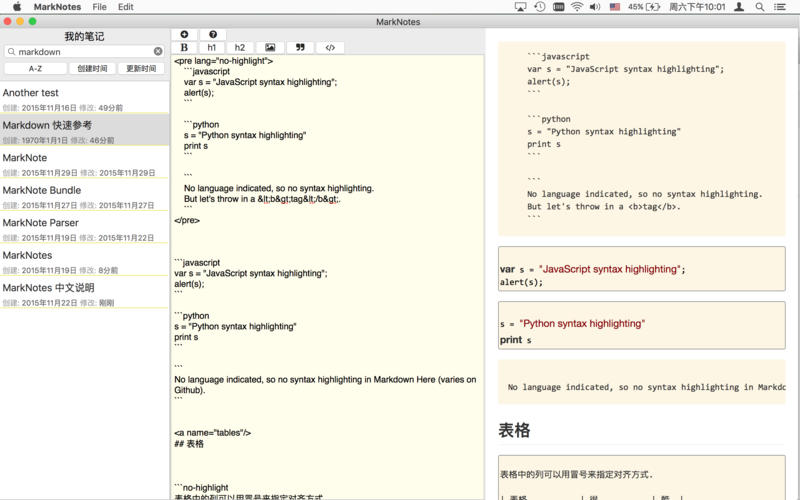

MarkNotes 中文说明
tags: 应用

写文档，记笔记，写博客。
这是一个强大的工具用来帮助您使用markdown来写作文档或是笔记。它让您随心所欲的在文档中插入图片／图表，使用各种格式，导出为各种格式，甚至生成博客站点。
功能
所有笔记自动同步到iCloud drive，和所有的设备共享。可以在iPhone/iPad上通过MarkNote应用管理笔记
- 简单而强大的文本编辑器。即使您对
Markdown不太熟也没有关系，这个应用可以帮您很快上手 - 实时预览，自动保存
- 使用tag来管理笔记
markdown和嵌入代码语法高亮显示- 全面而灵活的格式转换。支持将笔记导出为HTML格式，可以导出全部或者部分笔记生成博客站点
- 使用关键词搜索笔记，排序



支持
任何问题请邮件联系 marknote@aliyun.com